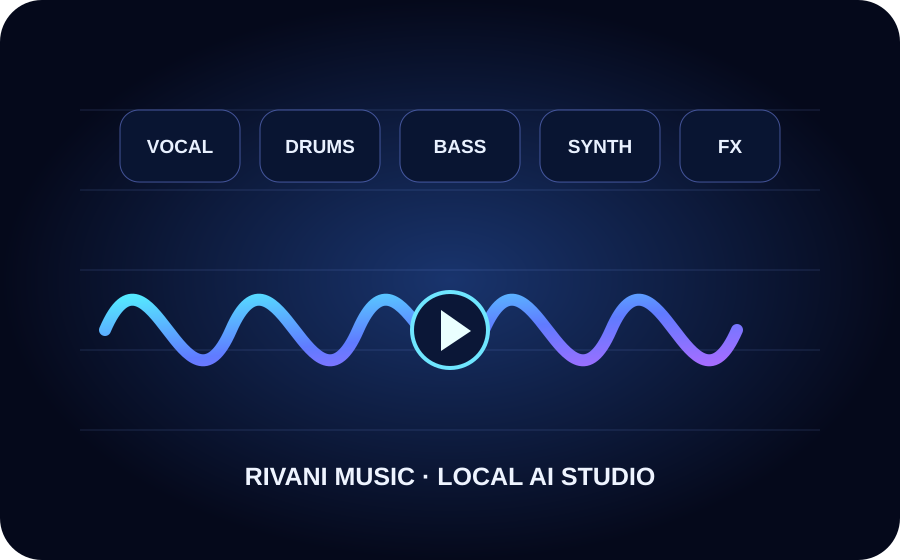

Cloud auto lyrics
Use ACE-Step Simple Mode / planner to turn a song idea into structured lyrics and metadata without a browser model download.
Instant Cloud sends the generation job to a shared ACE-Step GPU service, so the user downloads only the finished audio—not multi-gigabyte model weights. Private Browser remains available for users who prefer on-device WebGPU generation.
Private Browser runs one generation at a time. Browser AI cannot hard-lock every PC to exactly 70% GPU / 50% CPU; presets limit workload through model precision, duration and concurrency.
Standard XL Turbo audio. Cached model files can be removed later from Model Storage.
Cloud mode streams the generated audio back from the provider. Private Browser creates audio on-device.

No track yetInstant Cloud is selected. Start with a 10-second test.Roadmap targets are not claims that V43 already supports every Suno-style workflow.
Use ACE-Step Simple Mode / planner to turn a song idea into structured lyrics and metadata without a browser model download.
Reference audio, cover, repaint, extend and continuation with rights-aware upload controls.
Vocals, drums, bass and instrument stems with timeline editing, mixer controls and mastering.
Consented voice/reference workflows and user-controlled style profiles without celebrity impersonation presets.